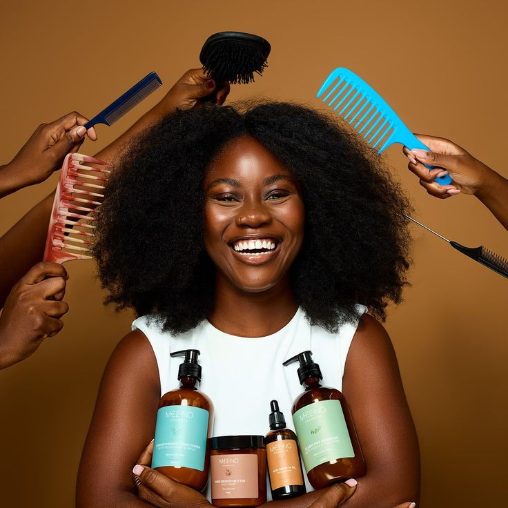
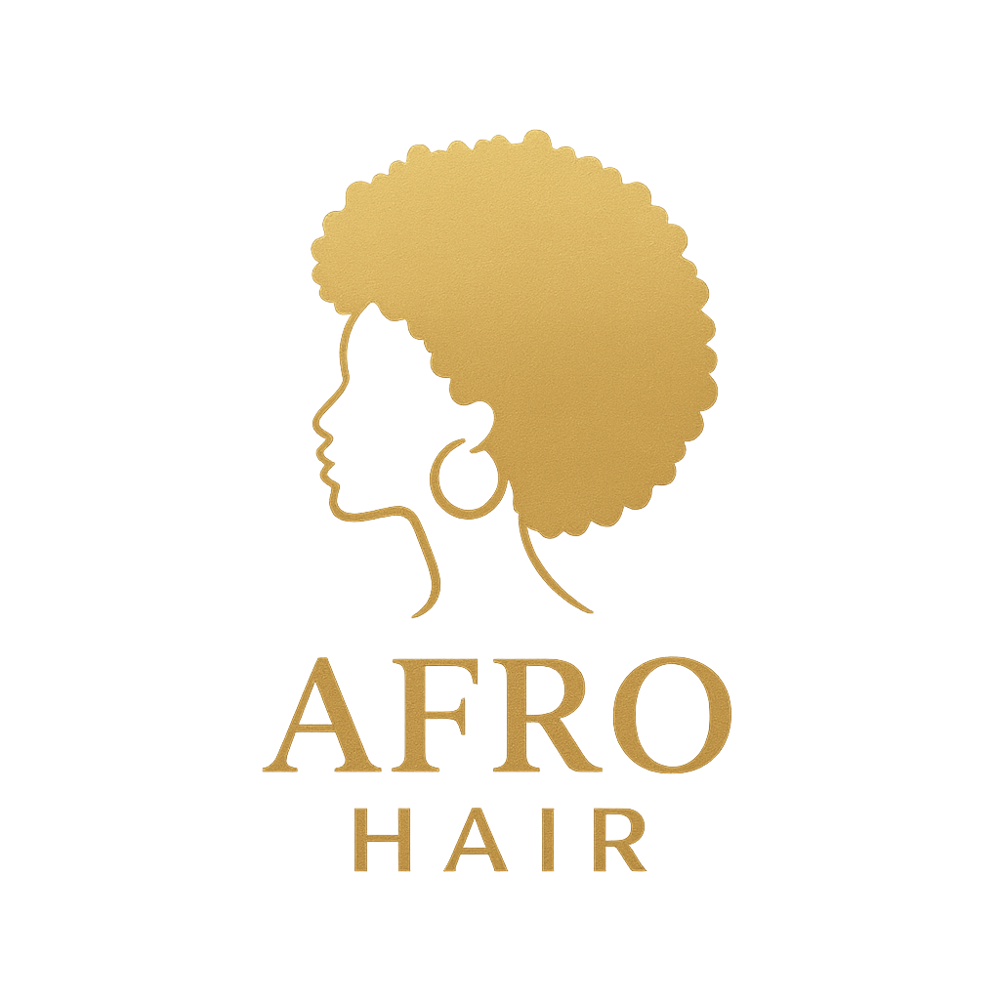
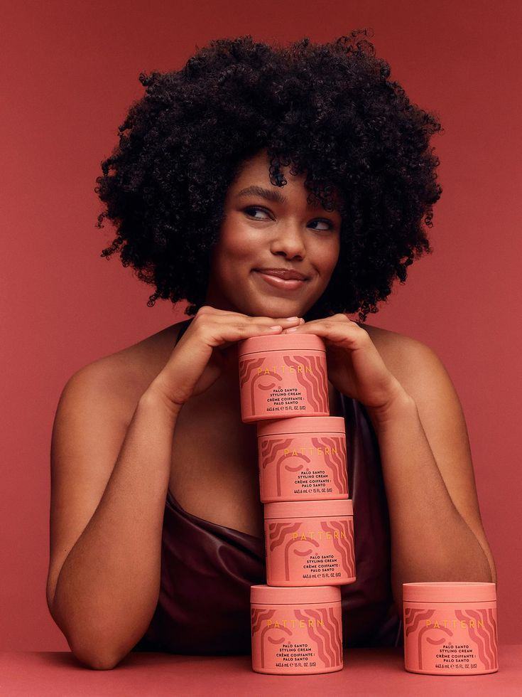
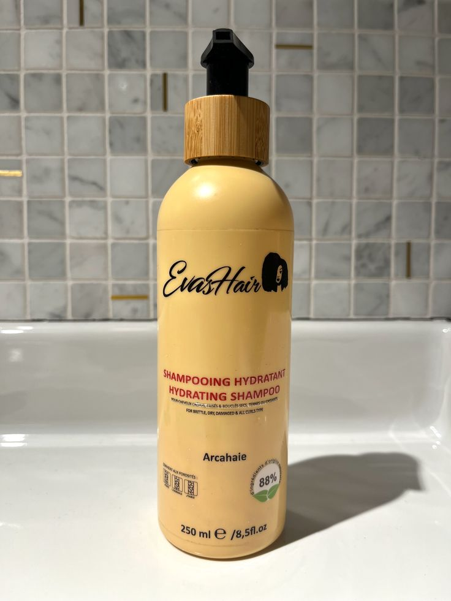

game karite
49,50 euros

Prendre soin des cheveux des enfants demande douceur, naturel et efficacité. Leur cuir chevelu encore sensible et leurs cheveux souvent fins ou facilement emmêlés nécessitent des produits spécialement formulés pour eux. Les gammes capillaires pour enfants privilégient des ingrédients délicats, sans sulfates agressifs, sans parabènes et sans silicones lourds, afin de respecter l’équilibre du cuir chevelu tout en offrant une hydratation adaptée.
Les shampoings pour enfants nettoient en douceur grâce à des formules à pH équilibré et des parfums légers. Ils laissent les cheveux propres et souples sans provoquer d’irritations. Les après-shampoings et démêlants, quant à eux, sont idéals pour faciliter le brossage : ils réduisent les nœuds, apportent de la brillance et évitent les tiraillements douloureux. Certains contiennent des agents nourrissants comme l’aloe vera, l’huile de coco ou le beurre de karité, parfaits pour hydrater les cheveux bouclés, frisés ou crépus.Lire la suite
Pour protéger encore davantage la chevelure des petits, des soins sans rinçage ou des sprays hydratants peuvent être appliqués quotidiennement. Ils renforcent les cheveux contre la casse, disciplinent les mèches rebelles et procurent un toucher doux et soyeux.
Utiliser des produits capillaires adaptés permet non seulement de préserver la santé des cheveux des enfants, mais aussi de créer des moments de soin agréables et ludiques. Avec des formules pensées pour eux, les enfants profitent d’une chevelure belle, forte et pleine de vitalité, jour après jour.

49,50 euros

60,20 euros
20,10 euros

30 euros